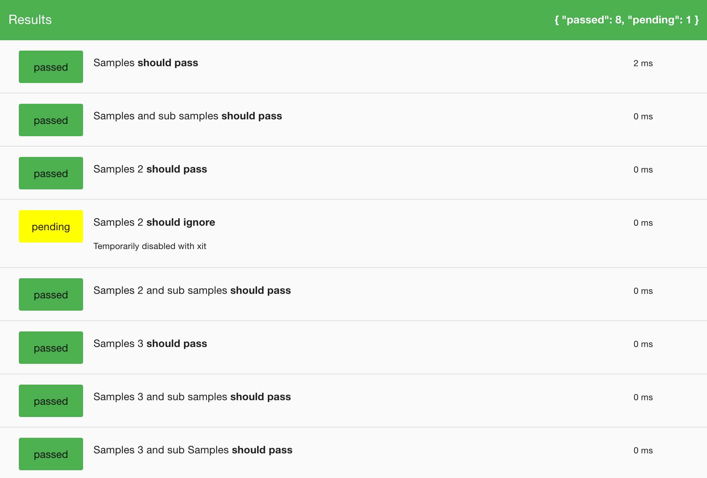
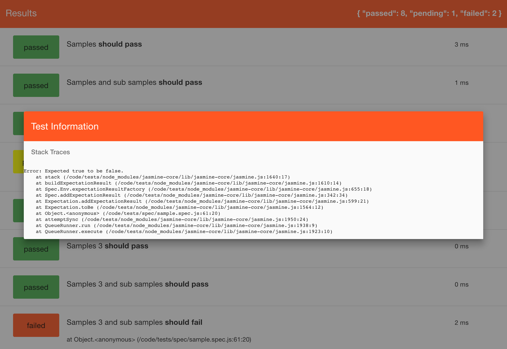

What does it do?
It provides a simple way to look at jasmine test results
Features
- Pass/Fail at a glance via navbar highlighting
- Bolds it('segment') within describe sentence
- Adds timing in milliseconds to output
- Long running test support, report can be refreshed during test runs
View Samples
Successful test run sampleFailures during test run sample


